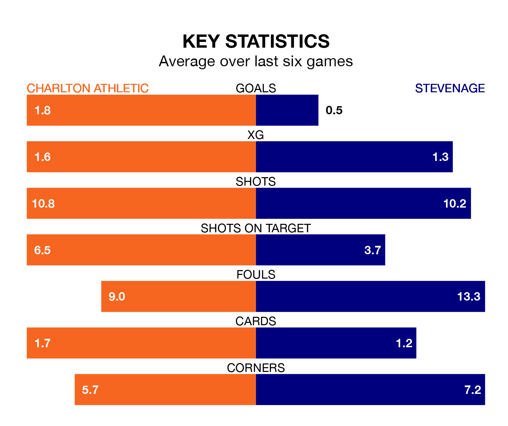

Charlton Athletic face Stevenage on Monday seeking to protect their formidable unbeaten run in EFL League One.
The Addicks are unbeaten in nine, with three wins and six draws, ahead of the 3pm kick-off.
They face a Stevenage team who have won two and drawn four over the same number of games.
In Alfie May, Charlton have the league's most on-form striker so far this season. He has notched 21 goals in 37 appearances.
His goal rate of one every 148 minutes is quicker than that of Jamie Reid, Stevenage's top scorer with a goal every 177 minutes, and a total of 17 goals in 37 games.
With 58 goals in 40 games so far this season, Athletic are scoring more than average in the league with 1.4 goals per game. But they are conceding more than average too, letting in 59 goals at a rate of 1.5 per game.
The Boro, meanwhile, are average scorers, with 1.3 goals per game. They have conceded 1.0 goal per game.
The Addicks are 17th in the table after 40 games, of which they have won 10 and drawn 16, earning 46 points.
The visitors are nine places ahead of the home side in eighth, with 17 wins and 12 draws putting them on 63 points.
Over the last two years, Charlton and Stevenage have played each other twice. they drew both of them.
Their last meeting was on September 16, when they played out a 1-1 draw.
Charlton's last match was on Friday, a 1-1 draw against Exeter City.
Stevenage drew 0-0 with Bolton Wanderers last time out, also on Friday.
Monday's match will be refereed by Scott Oldham, who has taken charge of 15 EFL League One games so far this season, issuing five red cards and booking 39 players. He has awarded one penalty.
The last Charlton game Oldham refereed was a 4-0 home win against Reading on October 21. He is yet to oversee a match featuring Stevenage this season.
Updated: 10:31 (UTC), 31/03/24